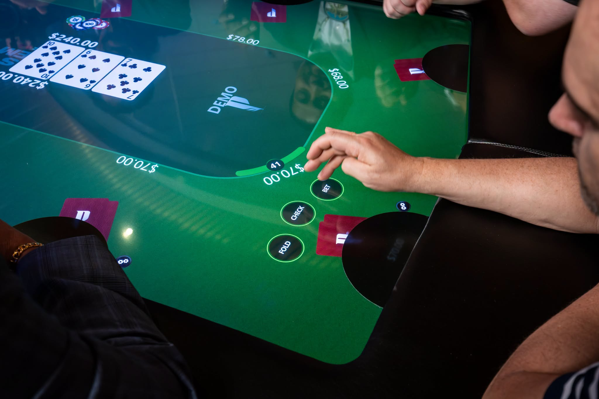

There’s a new poker game at Pechanga Resort Casino, and the dealer won’t be asking for a break.
That’s because there isn’t one.
Pechanga, the tribal casino near Temecula, California, has opened eight Jackpot Blitz electronic poker tables, bringing players together around a shared touchscreen instead of a traditional felt table with a human dealer.
Players still sit across from one another. They still make decisions, put money at risk, and try to win the pot. But the cards, chips, bets, and community board are handled electronically.
The casino and the manufacturer are betting that players will welcome the experience. The early conversation shows that players have plenty to say about the change.
Some commenters say they have already played and enjoyed the tables. Others miss the feel of physical cards and chips, question the cost, or remember a similar experiment that did not last in Las Vegas.
Poker on a 75-inch screen
Jackpot Digital and Pechanga announced on October 9 that the eight tables were open for play. The launch followed a July agreement between the companies to bring the games to the casino.
Each table uses a 75-inch touchscreen. According to the companies, the system handles the game electronically while players remain together in the same physical space. (Jackpot Digital and Pechanga launch announcement, Oct. 9, 2026) Pechanga says its digital tables offer Texas Hold’em and Omaha, with seating for eight players at each table. (Pechanga table games page)
The manufacturer says the table also uses what it calls card-bending technology, which bends and reveals each player’s cards at the table to recreate the feel of checking a physical hand.
So, yes, you can still look across the table and size up an opponent. You just won’t be stacking a tower of chips while you do it.
For the casino, the attraction is easy to see. Jackpot Digital says removing the live dealer means faster games, more hands per hour, and reduced operating costs. Those are the company’s claims, and the actual results at Pechanga remain to be seen. (Jackpot Digital announcement of Pechanga agreement, July 27, 2026)
For players, the trade-off may come down to whether the convenience is worth giving up parts of the traditional game.
Players are divided
Comments provided to The Sham Report from a Pechanga Facebook post show a range of reactions, including some from people who say they have played the machines.
One commenter said they had played four sessions and enjoyed the experience, adding that the table conversation felt similar to a live poker game.
Another said they had played a few times with mixed results and appreciated Pechanga’s effort. A third said they loved the game and planned to play regularly.
Other players focused on what disappears when the game moves onto a screen.
One commenter pointed out that watching opponents look at their cards, handle their chips, and put money into the pot can provide information. Another said they prefer the feeling of holding cards and stacking chips.
And one commenter raised a question that will hit home for anyone who has spent years perfecting a chip trick:
“How am I suppose to shuffle chips with both hands to let people know how experienced I am now. 🙃”
Jokes aside, that gets at something real. Poker is a social and physical game for many players. Handling chips, protecting cards, and watching an opponent move are part of the experience, even when those actions do not tell the whole story.
Others took a more practical view. One welcomed the new option, saying something was better than nothing.
Vegas has seen this before
The idea of dealerless poker is not new.
In 2008, Excalibur on the Las Vegas Strip replaced its traditional poker tables with 12 electronic PokerPro tables made by PokerTek. The move drew attention as a test of whether players would accept a fully automated poker room. (Card Player, Aug. 29, 2008)
The experiment did not become a permanent fixture. In June 2009, PokerTek announced that its 12 tables would be removed from Excalibur effective July 5 of that year, after Excalibur exercised its right to end the agreement. (PokerTek press release, June 23, 2009 (SEC filing))
Several commenters remembered the Vegas experiment, including the PokerTek tables at Excalibur. One said they were curious to see what is different this time.
Other commenters remembered electronic poker tables on cruise ships, at the Plaza in Las Vegas, and at WinStar in Oklahoma. Another said a casino where they worked had used PokerPro tables years ago and that players enjoyed them.
Those comments are personal recollections and have not been independently verified.
Excalibur’s experience does not prove every electronic poker table is destined to fail. The technology has changed, operators serve different customers, and Pechanga’s setup is not identical to Excalibur’s.
But the history is a reminder that building a table is one thing. Getting poker players to choose it, night after night, is another.
There is also a connection between the old experiment and the new one. Jackpot Digital acquired PokerTek’s assets in 2015 and later developed newer electronic gaming products. Jackpot Blitz is a later product, not the same table Excalibur used. (Jackpot Digital company profile, Summer 2017 (PDF))
What about the rake?
For some players, the biggest question has nothing to do with whether the cards are real.
It’s what the game costs.
One commenter said they hoped the rake would be lower than at other live card rooms because the electronic tables do not require dealers at each game. Another asked the question even more directly: “And the rake?”
A rake is the fee a poker operator typically takes from a pot. If a digital table deals more hands per hour and charges a rake on each eligible hand, players could pay more in fees over the same amount of time, even if the rake per hand is unchanged.
That does not mean Pechanga’s digital games necessarily cost more. The casino’s rake structure, stakes, actual hands per hour, and how consistently the tables are filling up have not been confirmed.
Those details will matter to anyone deciding whether the game is worth playing.

Is it poker or a slot machine?
One commenter asked how cards are distributed and whether the game has an RTP element.
RTP, or return to player, is commonly discussed with casino games such as slot machines. It describes the proportion of money wagered that a game is designed to return over a long period.
In a player-versus-player poker game, players compete against one another for the pot while the operator charges a fee. That is a different arrangement from a slot machine, where a player is playing a game against the house.
That distinction does not answer every question about how Pechanga’s specific tables work. Players deserve clear information about the shuffle, the rules, the fees, and any independent testing or regulatory oversight that applies.
Some commenters expressed skepticism about digital shuffling. Skepticism alone is not evidence that a game is manipulated, and The Sham Report has seen no evidence of rigging at Pechanga’s tables.
What happens to the dealer?
A traditional poker dealer does more than move the action along.
Dealers pitch cards, manage bets, help keep the game orderly, and contribute to the atmosphere. When an issue needs a ruling, a floor person may step in.
An electronic table changes that experience. Some players may appreciate automatic handling of bets and payouts. Others may miss having a dealer manage the action and interact with the table.
There is also a labor question. A table that does not require a dealer at each game could reduce an operator’s staffing costs, but it also raises concerns for people who make their living dealing poker.
Pechanga’s staffing arrangements for the digital tables have not been confirmed.
The business behind the tables
Pechanga represents a major installation for Jackpot Digital. When the launch was announced, the company called it its “largest single-property deployment to date.” (Jackpot Digital and Pechanga launch announcement, Oct. 9, 2026)
Its financial filing also shows why growth matters to the company.
For the six months ending June 30, 2026, Jackpot Digital reported approximately C$230,000 in revenue and a C$4.09 million net loss. The figures are in Canadian dollars and cover the company’s overall business. They do not tell us whether the Pechanga installation itself is profitable.
The filing said several adverse conditions may cast significant doubt on the assumption that the company will continue as a going concern, including operating losses and a working capital deficiency. That is a financial disclosure, not a prediction about Pechanga’s tables. (Jackpot Digital interim financial statements, six months ended June 30, 2026)
Could Texas poker rooms use them?
The Texas question is interesting, but there is no simple answer.
Many Texas poker clubs say they operate legally by charging membership fees and dues rather than taking a percentage of each pot. The Texas State Law Library notes that club owners make that argument, while their legality remains under debate. (Texas State Law Library guide to poker clubs)
Texas gambling law includes a defense to certain gambling charges that requires play in a private place, no economic benefit to anyone beyond personal winnings, and equal risks and chances for all players except for skill or luck. State law also contains separate provisions addressing gambling devices and their possession.
How those provisions might apply would depend on the equipment, the game, the payment arrangements, and the particular facts. (Texas Penal Code Chapter 47)
An electronic table operating at a California tribal casino does not establish that the same setup could operate at a Texas social club. There is not enough information about a hypothetical Texas installation to declare every possible arrangement lawful or unlawful.
We have not found a Jackpot Blitz table operating in a Texas poker club, though that does not mean none exists.
The real test
Pechanga’s launch puts a newer version of an old idea in front of poker players: sit together in person, but let the machine handle the game.
Some players say they like it. Others already know they would rather play with a dealer, a deck, and a stack of chips.
The bigger test will come after the ribbon cutting and the first wave of curiosity.
What does it cost to play? How many hands are actually being dealt? Are the games full? And when players have the choice, will they keep coming back?
What do you think? Would you play on a dealerless poker table, or are real cards and chips a must?